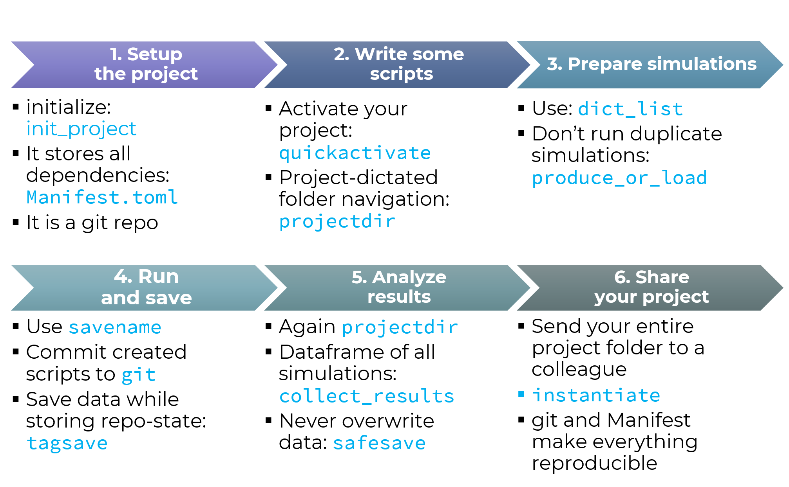

DrWatson Workflow Tutorial
Disclaimer: DrWatson assumes basic knowledge of how Julia's project manager works.
This example page demonstrates how DrWatson's functions help a typical scientific workflow, as illustrated below:

Blue text comes from DrWatson. Of course, not all of DrWatson's functionality will be highlighted in this tutorial nor is shown in the above figure!
1. Setup the project
So, let's start a new scientific project. You want your project to be contained in a folder. So let's create a new project, located at current working directory
using DrWatson
initialize_project("DrWatson Example"; authors="Datseris", force=true)"DrWatson Example"Alright now we have a project set up. The project has a default reasonable structure, as illustrated in the Default Project Setup page:
│projectdir <- Project's main folder. It is initialized as a Git
│ repository with a reasonable .gitignore file.
│
├── _research <- WIP scripts, code, notes, comments,
│ | to-dos and anything in an alpha state.
│ └── tmp <- Temporary data folder.
│
├── data <- **Immutable and add-only!**
│ ├── sims <- Data resulting directly from simulations.
│ ├── exp_pro <- Data from processing experiments.
│ └── exp_raw <- Raw experimental data.
│
├── plots <- Self-explanatory.
├── notebooks <- Jupyter, Weave or any other mixed media notebooks.
│
├── papers <- Scientific papers resulting from the project.
│
├── scripts <- Various scripts, e.g. simulations, plotting, analysis,
│ │ The scripts use the `src` folder for their base code.
│ └── intro.jl <- Simple file that uses DrWatson and uses its greeting.
│
├── src <- Source code for use in this project. Contains functions,
│ structures and modules that are used throughout
│ the project and in multiple scripts.
│
├── README.md <- Optional top-level README for anyone using this project.
├── .gitignore <- by default ignores _research, data, plots, videos,
│ notebooks and latex-compilation related files.
│
├── Manifest.toml <- Contains full list of exact package versions used currently.
└── Project.toml <- Main project file, allows activation and installation.
Includes DrWatson by default.
For example, folders exist for data, plots, scripts, source code, etc. Three files are noteworthy:
- Project.toml: Defines project
- Manifest.toml: Contains exact list of project dependencies
- .git (hidden folder): Contains reversible and searchable history of the project
The scientific project we have created is also a Julia project environment. This means that it has its own dedicated dependencies and versions of dependencies. This project is now active by default so we can start adding packages that we will be using in the project. We'll add the following for demonstrating
using Pkg
Pkg.add(["Statistics", "JLD2"])2. Write some scripts
We start by writing some script for our project that will do some dummy calculations. Let's create scripts/example.jl in our project. All following code is supposed to exist in that file.
Now, with DrWatson every script (typically) starts with the following two lines:
using DrWatson
@quickactivate "DrWatson Example" # <- project nameThis command does something simple: it searches the folder of the script, and its parent folders, until it finds a Project.toml. It activates that project, but if the project name doesn't match the given name (here "DrWatson Example") it throws an error. Let's see the project we activated:
projectname()"DrWatson Example"This is extremely useful for two reasons. First, it is guaranteed that our scripts run within the context of the project and thus use the correct package versions.
Second, DrWatson provides the powerful function projectdir and its derivatives like datadir, plotsdir, srcdir, etc.
projectdir()"/home/runner/work/DrWatson.jl/DrWatson.jl/docs/build/DrWatson Example"projectdir will always return the path to the currently active project. It doesn't matter where its called from, or where the active project actually is. So, by using DrWatson, you don't care anymore where your current script is, you only care about the target directory.
datadir()"/home/runner/work/DrWatson.jl/DrWatson.jl/docs/build/DrWatson Example/data"datadir("sims", "electron_gas")"/home/runner/work/DrWatson.jl/DrWatson.jl/docs/build/DrWatson Example/data/sims/electron_gas"Giving arguments to projectdir and derivatives joins paths.
3. Prepare simulations
Let's say we write a simple simulation function, that creates some data
function fakesim(a, b, v, method = "linear")
if method == "linear"
r = @. a + b * v
elseif method == "cubic"
r = @. a*b*v^3
end
y = sqrt(b)
return r, y
endfakesim (generic function with 2 methods)and we create some parameters in our scripts and run the simulation
a, b = 2, 3
v = rand(5)
method = "linear"
r, y = fakesim(a, b, v, method)([4.527877843473009, 3.4076628584515456, 3.61605769933205, 3.9156668497080913, 2.541472970519564], 1.7320508075688772)Okay, that is fine, but it is typically the case that in scientific context some simulations are done for several different combinations of parameters. It is convenient to group all parameters in a dictionary, with the keys being the parameters. Depending on the package you will use to actually save the data, the key type should be either String or Symbol. Here we will be using JLD2.jl and therefore the key type will be String.
params = @strdict a b v methodDict{String, Any} with 4 entries:
"v" => [0.842626, 0.469221, 0.538686, 0.638556, 0.180491]
"method" => "linear"
"b" => 3
"a" => 2Above we used the ultra-cool @strdict macro, which creates a dictionary from existing variables!
Now, for every simulation we want to do, we would create such a container. We can use the dict_list to ease up the process of preparing several of these parameter containers
allparams = Dict(
"a" => [1, 2], # it is inside vector. It is expanded.
"b" => [3, 4],
"v" => [rand(5)], # single element inside vector; no expansion
"method" => "linear", # not in vector = not expanded, even if naturally iterable
)
dicts = dict_list(allparams)4-element Vector{Dict{String, Any}}:
Dict("v" => [0.8960895345164464, 0.8813207731312296, 0.6179455243167062, 0.4692438942565056, 0.886923252301077], "method" => "linear", "b" => 3, "a" => 1)
Dict("v" => [0.8960895345164464, 0.8813207731312296, 0.6179455243167062, 0.4692438942565056, 0.886923252301077], "method" => "linear", "b" => 4, "a" => 1)
Dict("v" => [0.8960895345164464, 0.8813207731312296, 0.6179455243167062, 0.4692438942565056, 0.886923252301077], "method" => "linear", "b" => 3, "a" => 2)
Dict("v" => [0.8960895345164464, 0.8813207731312296, 0.6179455243167062, 0.4692438942565056, 0.886923252301077], "method" => "linear", "b" => 4, "a" => 2)using dict_list is great, because it has a very clear design on how to expand containers, while not caring whether the parameter values are iterable or not. In short everything in a Vector is expanded once (Vectors of length 1 are not expanded naturally). See dict_list for more details.
The resulting dictionaries are then typically given into a main or makesim function that actually does the simulation given some input parameters.
4. Run and save
Alright, we now have to actually save the results, so we first define:
function makesim(d::Dict)
@unpack a, b, v, method = d
r, y = fakesim(a, b, v, method)
fulld = copy(d)
fulld["r"] = r
fulld["y"] = y
return fulld
endmakesim (generic function with 1 method)and then we can save the results by once again leveraging projectdir
for (i, d) in enumerate(dicts)
f = makesim(d)
wsave(datadir("simulations", "sim_$(i).jld2"), f)
end(wsave is a function from DrWatson, that ensures that the directory you try to save the data exists. It then calls FileIO.save)
Here each simulation was named according to a number. But this is not how we do it in science... We typically want the input parameters to be part of the file name. E.g. here we would want the file name to be something like a=2_b=3_method=linear.jld2. It would be also nice that such a naming scheme would apply to arbitrary input parameters so that we don't have to manually write a=$(a)_b=$(b)_method=$(method) and change this code every time we change a parameter name...
Enter savename:
savename(params)"a=2_b=3_method=linear"savename takes as an input pretty much any Julia composite container with key-value pairs and transforms it into such a name. We can even do
savename(dicts[1], "jld2")"a=1_b=3_method=linear.jld2"savename is flexible and smart. As you noticed, even though the vector v with 5 numbers is part of the input, it wasn't included in the name (on purpose). See the savename documentation for more.
We now transform our make+save loop into
for (i, d) in enumerate(dicts)
f = makesim(d)
wsave(datadir("simulations", savename(d, "jld2")), f)
end
readdir(datadir("simulations"))4-element Vector{String}:
"a=1_b=3_method=linear.jld2"
"a=1_b=4_method=linear.jld2"
"a=2_b=3_method=linear.jld2"
"a=2_b=4_method=linear.jld2"That is cool, but we can do better. In fact, much better. Remember that the project initialized by DrWatson is a git repository. So, now we quickly go into git and commit the script we have created and all changes (not shown here).
Then we make+save again, but now instead of wsave we use @tagsave:
for (i, d) in enumerate(dicts)
f = makesim(d)
@tagsave(datadir("simulations", savename(d, "jld2")), f)
endand let's load the first simulation
firstsim = readdir(datadir("simulations"))[1]
wload(datadir("simulations", firstsim))Dict{String, Any} with 9 entries:
"v" => [0.89609, 0.881321, 0.617946, 0.469244, 0.886923]
"method" => "linear"
"gitcommit" => "03efc24b349a20be21093639cf932d76032f0c7a"
"script" => "docs/build/string#3"
"b" => 3
"r" => [3.68827, 3.64396, 2.85384, 2.40773, 3.66077]
"gitpatch" => ""
"a" => 1
"y" => 1.73205So what happened is that tagsave automatically added git-related information into the file we saved (the field :gitcommit), enabling reproducibility!
It gets even better! Because @tagsave is a macro, it deduced automatically where the script that called @tagsave was located. It even includes the exact line of code that called the @tagsave command. This information is in the :script field of the saved data!
5. Analyze results
Cool, now we can start analyzing some simulations. The actual analysis is your job, but DrWatson can help you get started with the collect_results function. Notice that you need to be using DataFrames to access the function!
Pkg.add(["DataFrames"])
using DataFrames
df = collect_results(datadir("simulations"))| v | method | b | r | a | y | path | |
|---|---|---|---|---|---|---|---|
| Array…? | String? | Int64? | Array…? | Int64? | Float64? | String? | |
| 1 | [0.89609, 0.881321, 0.617946, 0.469244, 0.886923] | linear | 3 | [3.68827, 3.64396, 2.85384, 2.40773, 3.66077] | 1 | 1.73205 | /home/runner/work/DrWatson.jl/DrWatson.jl/docs/build/DrWatson Example/data/simulations/a=1_b=3_method=linear.jld2 |
| 2 | [0.89609, 0.881321, 0.617946, 0.469244, 0.886923] | linear | 4 | [4.58436, 4.52528, 3.47178, 2.87698, 4.54769] | 1 | 2.0 | /home/runner/work/DrWatson.jl/DrWatson.jl/docs/build/DrWatson Example/data/simulations/a=1_b=4_method=linear.jld2 |
| 3 | [0.89609, 0.881321, 0.617946, 0.469244, 0.886923] | linear | 3 | [4.68827, 4.64396, 3.85384, 3.40773, 4.66077] | 2 | 1.73205 | /home/runner/work/DrWatson.jl/DrWatson.jl/docs/build/DrWatson Example/data/simulations/a=2_b=3_method=linear.jld2 |
| 4 | [0.89609, 0.881321, 0.617946, 0.469244, 0.886923] | linear | 4 | [5.58436, 5.52528, 4.47178, 3.87698, 5.54769] | 2 | 2.0 | /home/runner/work/DrWatson.jl/DrWatson.jl/docs/build/DrWatson Example/data/simulations/a=2_b=4_method=linear.jld2 |
Some things to note:
- the returned object is a
DataFramefor further analysis. - the input to
collect_resultis a folder, not a dataframe! The function does the loading and combining for you. - If you create new simulations, you can iteratively (or all from scratch) add them to this dataframe.
- If you create new simulations that have new parameters, that don't exist in the simulations already saved, that's no problem.
collect_resultswill appropriately and automatically addmissingto all parameter values that don't exist in previews and/or current simulations. This is demonstrated explicitly in the Adapting to new data/parameters real world example, so it is not repeated here. - Similarly with e.g.
savename,collect_resultsis a flexible function. It has several configuration options.
Great! so now we are doing some analysis and we want to save some results... It is very often the case in science that the same analysis may be done again, and again, and some times even with the same parameters... And poor scientitists sometimes forget to change the name of the output file, and end up overwritting previous work! Devastating!
To avoid such scenarios, we can use the function safesave, e.g.
analysis = 42
safesave(datadir("ana", "linear.jld2"), @strdict analysis)If a file linear.jld2 exists in that folder, it is not overwritten. Instead, it is renamed to linear#1.jld2, and a new linear.jld2 file is made!
6. Share your project
This is already discussed in the Reproducibility section of the docs so there is no reason to copy/paste everything here. What is demonstrated there is that it is truly trivial to share your project with a colleague, and this project is guaranteed to work for them!
And that's it! We hope that DrWatson will take some stress out of the absurdly stressfull scientific life!